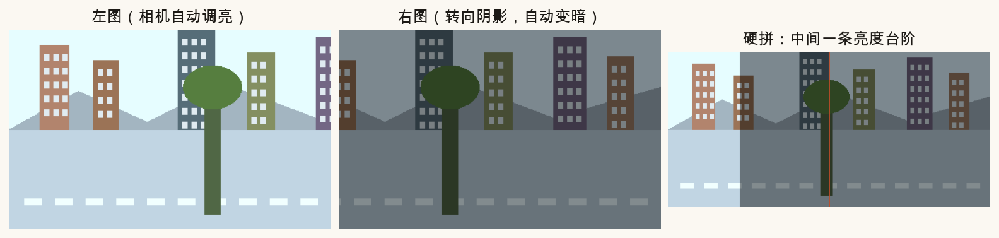
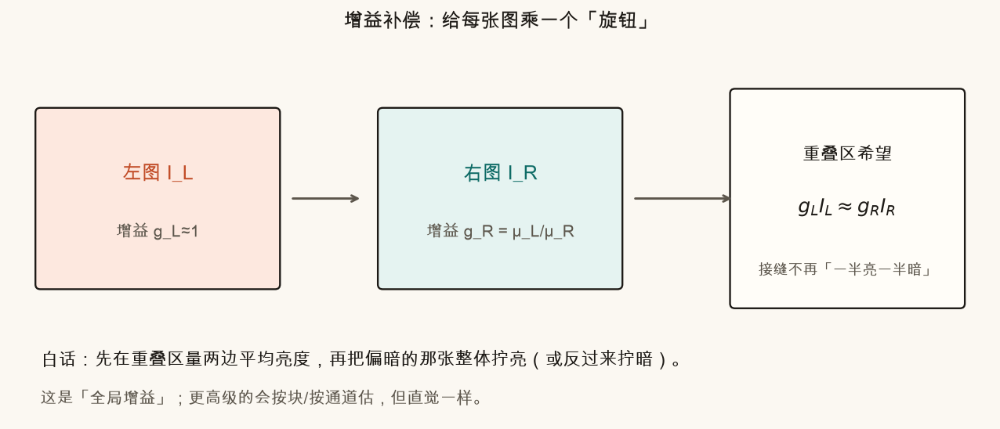
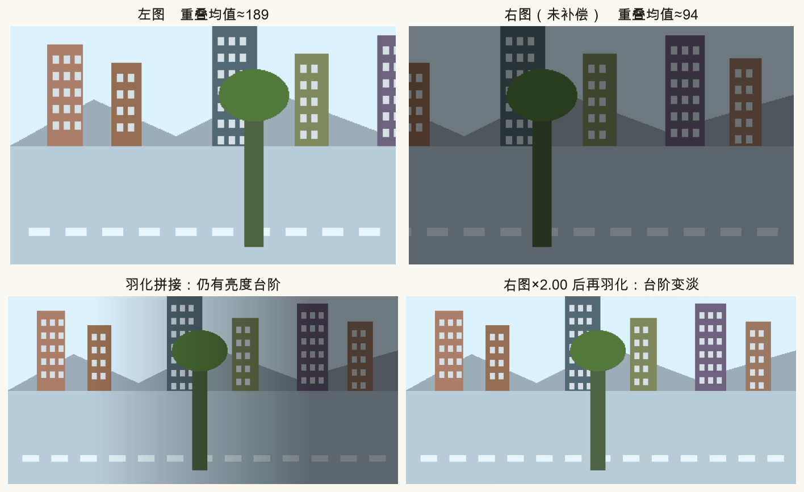
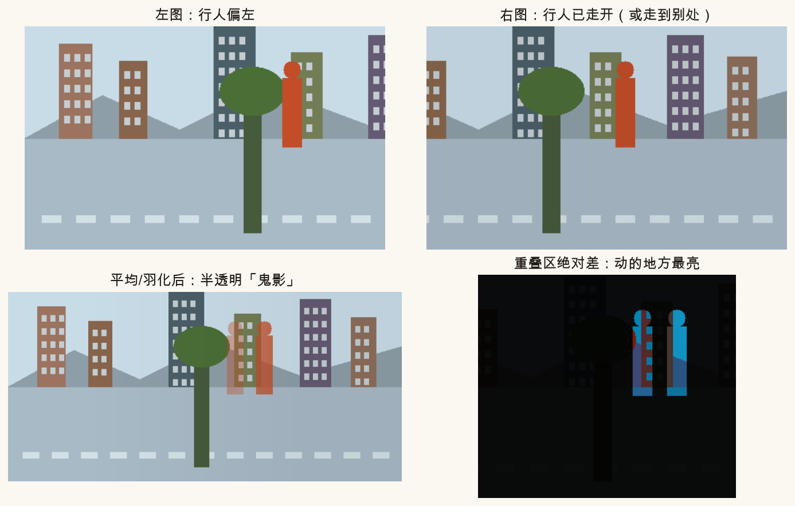
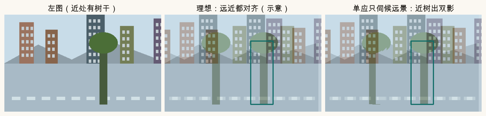
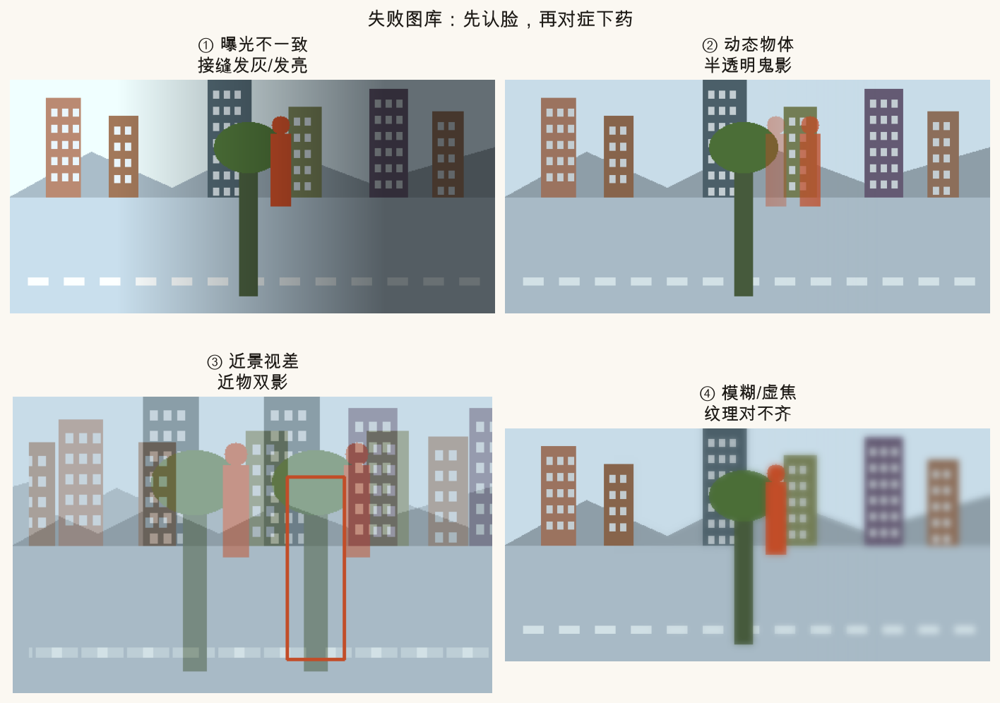
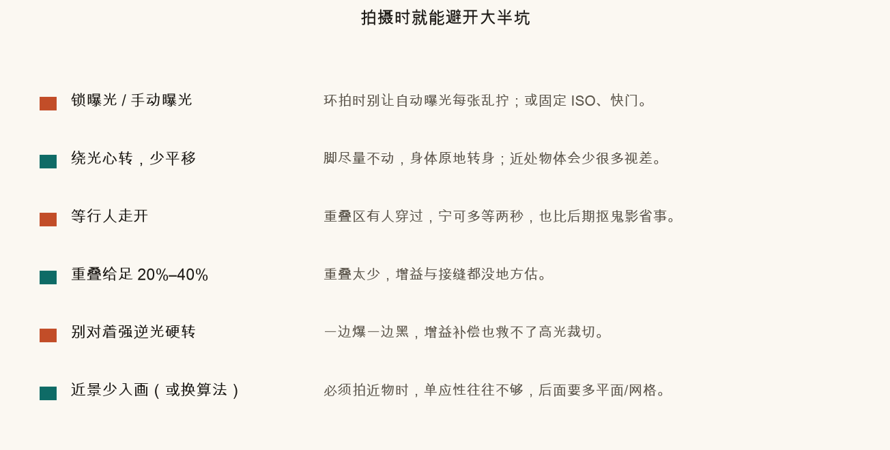

第 11 篇 · 失败与补救 · 约 45 分钟
几何对上了，全景仍可能「难看」：接缝一半亮一半暗、半透明路人、近处树干裂成双影。本篇把自动曝光、增益补偿、动态鬼影、近景视差拆开讲，并给一份失败图库与拍摄清单。页面里可以拧亮度差和行人偏移。
手机默认常开自动曝光（AE）：画面偏暗就拉高增益/加长曝光，偏亮就压回去。你原地环拍时，左半边可能对着天空，右半边对着楼影——相机会为每一张「单独找一个它觉得舒服的亮度」。
于是出现经典现象：两张图在重叠区本来是同一堵墙，左边那张墙是浅灰，右边那张墙是深灰。几何矩阵可以把墙边对齐，但像素值本身对不上。硬切会留下一条竖的亮度台阶；即便做了羽化（第 10 篇），台阶只会变成一条发灰的「雾带」，不会凭空消失。

快速自检：把接缝附近放大，如果墙砖纹理能对上、只是一边亮一边暗，优先怀疑曝光，而不是特征匹配失败。
还有两个加重剂：
想法很土，但管用：给每张图乘一个正数 g（增益），让重叠区看起来一样亮。把左图亮度当尺子，右图该拧多少，就看重叠区两边平均亮度的比。
gR ≈ μL / μR
这里 μ 是重叠区的平均灰度。白话：右图整体偏暗、均值只有左图的一半，就把右图每个像素大约乘 2。左图常常固定 gL=1，避免整幅一起漂。

多图时，可以在「每对重叠」上写方程，用最小二乘解一组增益（OpenCV 拼接模块里的 detail.GainCompensator 一类）。还有按块估的版本：同一张图上半亮、下半暗时，一个全局 g 不够，就切成小块分别拧。

增益补偿不修复几何。楼边若对不齐，拧亮度只会让双影「两边一样亮」，看起来更假。顺序通常是：先配准 → 再曝光补偿 → 再找缝/融合。
# 直觉版（两图）
ml = left_overlap.mean()
mr = right_overlap.mean()
g = ml / (mr + 1e-6)
right_fixed = clip(right * g, 0, 255)你拍左图时，有人站在重叠区；转过去拍右图时，人已经走开。两张图在「人曾经站过」的地方内容不一致。融合若取平均或半透明叠，就会出现半透明残影——俗称鬼影（ghost）。
树叶被风吹、车流、旗帜、水面波纹，都是同一类：场景在时间上不静止。特征匹配有时还能碰巧对上静止背景；融合阶段却必须决定「听哪一张」。

常见对策（由易到难）：
鬼影不是曝光问题：把增益拧到完全一致，半透明人影还在。差分图仍亮，说明内容本身冲突。
回忆第 2–3 篇：一张单应性 H 描述的是两个平面（或相机纯旋转）之间的映射。你脚下有一棵近树、远处有一排楼——它们不在同一深度。相机只要有一点平移（人转身时身体很难完全绕光心转），近树在图像上的位移就会比远楼大。这叫视差（parallax）。
估 H 时，特征点往往更多落在远景纹理上，于是 H「伺候」远楼：远景对齐得漂亮，近树却对不齐，半透明叠起来就是双影。看起来像鬼影，根因却是几何模型不够，不是行人在动。

和鬼影怎么区分？
出路：绕光心旋转拍摄、让近物远离取景；或上多平面 / 网格变形 / 深度相关的对齐（超出本篇，知道「单应不是万能胶」即可）。
把本篇和相邻篇的「难看」收成一张对照表。实战里先对号入座，再决定是拧增益、躲接缝，还是重拍。

| 现象 | 优先怀疑 | 先试什么 |
|---|---|---|
| 缝两侧纹理齐、明暗不同 | AE / 增益 | 锁曝光；增益补偿 |
| 半透明人/车/叶 | 动态场景 | 重拍；接缝躲开；多帧投票 |
| 近物双影、远景尚可 | 视差 | 绕光心；少近景；换模型 |
| 整片发糊、特征很少 | 虚焦/运动模糊 | 提高快门；重新对焦 |
| 楼边锯齿、整体扭曲 | H 估坏 / 投影选型 | 检查匹配；试柱面（第 9 篇） |
算法能补救一部分，但拍摄纪律往往比多调半小时参数更有效。下面六条覆盖本篇大半坑。

视频全景/多路拼接还会叠上时间同步与 Rolling Shutter（第 21、26 篇）。本篇先把「静态多图」的失败模式钉牢。
左侧模拟左图，右侧模拟右图。拖「右图暗度」看接缝台阶；打开「增益补偿」应把台阶压下去。再拖「行人偏移」：补偿解决不了鬼影，半透明人影仍在。
source .venv/bin/activate # 若尚未激活
MPLCONFIGDIR=/tmp/mpl-cache python code/ch11_exposure.py会写出 ch11_ae_jump.png、ch11_gain_before_after.png、ch11_ghost.png、ch11_parallax.png、ch11_failure_gallery.png 等，以及你的 ch11_my_exposure.png。
打开 code/ch11_exposure.py，改顶部三个旋钮。只影响 ch11_my_exposure.png，课文对照图仍用固定参数。
BRIGHTNESS_RATIO 改成 1.0，APPLY_GAIN_FIX=False：接缝应几乎看不出亮度台阶。2.5 且关闭增益：台阶很重；再打开 APPLY_GAIN_FIX=True，台阶应变淡。GHOST_SHIFT_PX 从 0 加到 50：无论增益开或关，都应看到更明显的半透明行人。BRIGHTNESS_RATIO=0.7（右图反而更亮）：增益会算出小于 1，把右图压暗对齐左图。优先查曝光 / AE。几何已对齐时，增益补偿或锁曝光才是对症。
约 120/60 = 2。即把右图整体拧到与左图重叠均值接近。
不能。鬼影是内容冲突；增益只统一亮度。需要躲缝、重拍或多帧投票。
视差。同一物体仍在，只是深度不同导致位移不同；单应性照顾了远景平面。
减少相机平移，从而减小视差，让「一张 H / 柱面投影」更站得住。
一对一对地估变换，误差会顺着链条往后爬。下一篇用白话讲 Bundle Adjustment：把多张图的位姿（和三维点）放进一个大锅里一起微调，让整体更自洽。